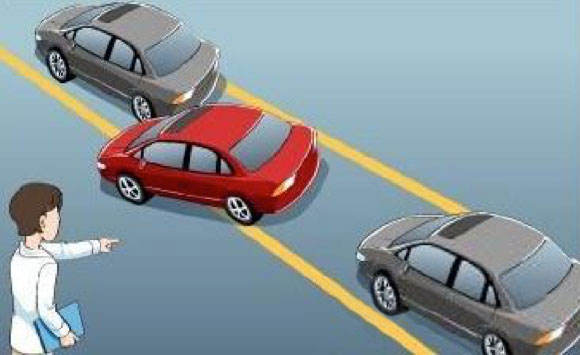

据了解，科目二考试中，多数考生败在了侧方停车和倒车入库这两项中，对此，小编总结了侧方停车考试的易出错点，大家不妨前来看看！

侧方停车是一种在城市中非常常见的“停车位”，那么，考场中的侧方停车位尺寸有多大呢？
1车位（库）长：大型客车为1.5倍车长减1米，小型车辆为1.5倍车长加1米，其他车辆为1.5倍车长；
2车位（库）宽：车宽加80厘米；
3车道宽：1.5倍车宽加80厘米。
驾考新规实施后，侧方停车考试取消了标杆，并由标线代替，考试难度有所增加，并且考试评判标准也有所更改，详情如下：
1车辆入库停止后，车身出线的，不合格；
2中途停车的，不合格；
3行驶中轮胎触轧车道边线的，扣10分。
1找不准参照点
驾考新规实施后，标杆由标线代替，对于这一变化，学员们普遍认为，找参照点是一大难题。虽然经过了两年的摸索，教练们也总结了不少的方法，如，通过后视镜、车门把、车盖筋线等参照物，对准某一个点即可，不过依然没有标杆来的明显，不少学员对此颇有抱怨。
小编点评：侧方停车是最常见的一种停车方法，或许考试中我们能找到某一个参照点，但是在现实生活中，却并不现实，毕竟我们不可能每次都会将车停在同一个车位中。因此，小编认为，用死方法找“点”并不可取，学员必须的勤加练习，利用后视镜、后保险杠、车门把手等参照物与标线进行对比，观察，活学活用，才能更好的掌握侧方停车技巧。
2中途停车，直接不合格
作为“菜鸟”来说，侧方停车考试禁止中途停车，无疑是加大了学员们手、眼、腿配合的难度。这必须要求学员能够非常熟练的掌握半离合，否则一旦中途停车，则被判定为不合格。
小编点评：考试中禁止中途停车，非常考校学员的配合度，因此，在训练时，学员需要花多一点时间练习对半离合的掌握。不过，小编也提醒大家，不管对驾驶技巧有多熟悉，都需要不断的实践操作才行。